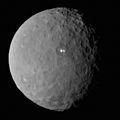
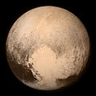
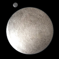
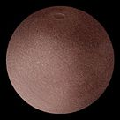
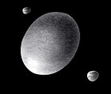

Los Planetas Enanos
Planeta enano es el término creado por la Unión Astronómica Internacional (UAI) para definir toda una nueva clase de cuerpos celestes que no pueden ser categorizados como planetas o cuerpo menor del sistema solar. Fue introducido en la resolución de la UAI del 24 de agosto de 2006 para los cuerpos del sistema solar. Según la UAI, un planeta enano es aquel cuerpo celeste que:
- Está en órbita alrededor de una estrella (como el Sol).
- Tiene suficiente masa para que su propia gravedad haya superado la fuerza de un cuerpo rígido, de manera que adquiera un equilibrio hidrostático (forma casi esférica).
- No es un satélite de un planeta u otro cuerpo no estelar.
- No ha limpiado la vecindad de su órbita, es decir la comparte con otros objetos.
La definición de la UAI, afirma que los objetos que respecto al Sol estén más allá de la órbita de Neptuno reciben el nombre de objetos trasneptunianos. Si un objeto celeste cumple con la definición de planeta enano y pertenece también al grupo de los transneptunianos (si está en la intersección de esos conjuntos) se denomina plutoide.
Las consecuencias más inmediatas de esta nueva definición fueron la pérdida de Plutón del estatus de planeta y su clasificación como planeta enano, y el aumento de categoría de Ceres, antes considerado un asteroide, y de Eris, conocido como Xena de manera informal o 2003 UB313, su denominación provisional.
Aquí van algunos datos de Urano:
Lista de Planetas Enanos y sus características
La UAI identificó inicialmente tres cuerpos celestes que recibieron inmediatamente la clasificación de "planetas enanos":1 Ceres (descubierto en 1801), Plutón (descubierto en 1930) y Eris (descubierto en 2005). En julio y septiembre de 2008 la lista se amplió con dos nuevos integrantes: Makemake y Haumea, respectivamente. La lista actual es la siguiente:
| Nombre | Imagen | Diametro (km) | Masa (kg) | Densidad (kg/m³) | Velocidad de escape (km/s) |
|---|---|---|---|---|---|
| Ceres |  | 946 | 9,5×1020 | 2,08 | 0,51 |
| Plutón |  | 2376.6 | ~1,305×1022 | 2,0 | 1,2 |
| Eris |  | 2326 | ~1,66×1022 | - | - |
| Makemake |  | 1430 | ~4 × 1021 | - | - |
| Haumea |  | 1632 | (4,2 ± 0,1) × 1021 | - | - |